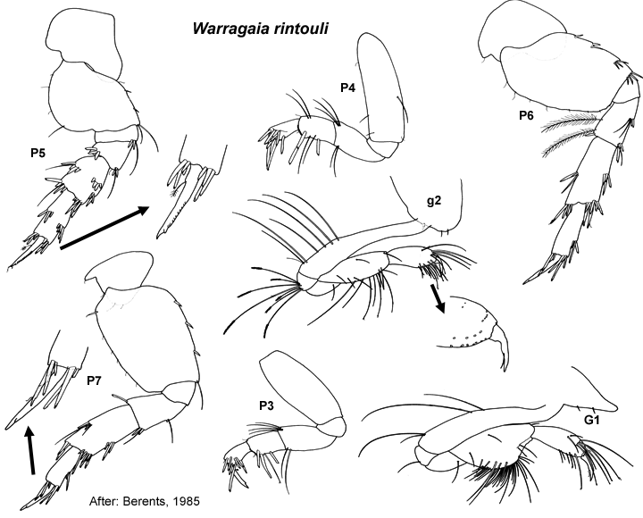

Warragaia rintouli Berents, 1985: 254, fig 1–3.
Type Material. Lodged in the AM.
Type Locality. 1 km off Moona Moona Creek, Jervis Bay, New South Wales, Australia (35º03'S, 150º41'E).
Description.Antenna 1 peduncular article 1 setal row with
only slender setae, proximal pair of setae plumose; accessory flagellum
3 -articulate; primary flagellum 7–9 -articulate. Antenna 2
peduncular article 4 main setal row with mostly robust setae, proximal
part of row evenly angled; peduncle article 5 not bulbous in male. Mandible incisors simple. Maxilla 1 palp with apical group of setae only.
Gnathopod 1 simple; coxa small, triangular or trapezoidal, slightly larger than coxa 2. Gnathopod 2 minutely subchelate, propodus palm acute. Pereopod 3 coxa large, subequal in size to coxa 4. Pereopod 4 coxa large, posteroventral lobe absent. Pereopod 5 basis without mediofacial brush of setae; dactylus without robust setae. Pereopod 6 basis moderately expanded, margins parallel; merus with few or no slender setae on posterior margin; dactylus well developed. Pereopod 7
coxa forming long posterior spine; basis moderately expanded, posterior
margins tapering distally, with slender setae along posteroproximal
margin; dactylus well developed, without robust setae.
Epimeron 2 subequal in size to epimeron 3, posteroventral corner broadly rounded, both epimera with few or no setae. Epimeron 3 posteroventral corner broadly rounded. Uropod 1 inner ramus absent or vestigial, fused to peduncle. Uropod 2 inner ramus absent or vestigial, fused to peduncle. Telson about subequal in length, entire.
Distribution.Australia: Jervis Bay, New South Wales.

___________________________
This
publication should be cited as: Kilgallen, N.M. & Lowry, J.K. 2008.
Urohaustoriidae (Amphipoda): World Genera and Species. Version 1. 1
January 2008. http://crustacea.net.